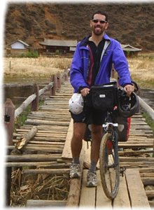

BTP單車活動的標語訂為
『為減緩地球暖化而騎－單車橫跨亞歐行動 Bike to Protect！』
BTP不僅是『北京到巴黎（Beijing to Paris）』的縮寫， 同時更有『騎單車保衛地球（Bike to Protect）』的意義在。
有多少人夢想過要當一個拯救世界的英雄，現在你也可以辦到！
那麼，即刻就減少你開汽車、騎機車的次數，上班或是通勤，騎單車也是很爽的！
今天發生了很多好事，讓我整個很慌張，剛剛下班時間，新竹外頭下大雨。
騎著車飛奔回來，淋成落湯雞，這才稍微讓我冷靜了一下。
擦完車、沖完澡，就來分享一下今天的進展。
前兩天才說還差兩樣東西沒有募集到，一個是筆記型電腦，一個是數位相機。
兩個都是高單價的商品，我一度懷疑有哪家公司願意真的贊助一台數萬元的筆記型電腦？
今天這個疑惑就被打破了，下午的時候，微星科技 MSI的Jeff與我聯繫。

第一句話就是『請問是德瑞嗎？』然後第二句話就是『我們願意贊助一台全新的筆記型電腦給你！』
我的手機差點沒從手上滑落到地上，但是下巴倒是落的差不多全開了。
經過閒聊，雙方都認知這不是一個商業化目的的贊助，而且對彼此都很有認同。
贊助筆記型電腦的事情，在五分鐘之內，MSI就這麼豪爽的答應了。
Jeff拿出了微星最新的，目前還沒有上市的S300，要讓我路上帶著用 T_T
整體來說很符合我的需求，有無線網路、讀卡機、高容量硬碟，而且還很輕薄，
規格上大致是：Intel C2D、DDRII 1G、13.3" 鏡面LCD和Vista。
用了Mac這麼多年的我，得花點時間熟悉一下Windows的使用了。（好加在我工作上都是用微軟）
贊助我一台這麼好的電腦，代價呢？
什麼都不用，只要我玩得開心、平安回來就好了，其他部份不需要想太多，這是他們跟我說的 T_T
這台S300筆記型電腦，將幫我記錄這一路上的旅程，回台灣之後，作為公益捐掉！
第二件，不知道算不算好事，就是有報社要來採訪。

張念慈，是新竹區的記者，認識她的朋友-喬依思這樣形容她
『我很喜歡念慈，她是一位很有人性並且很有理想的記者
雖然有時超沒氣質的(我相信你應該看過她的部落格了)』
念慈的部落格叫做『小記者所見所聞』
她是一位很有愛心的地方記者，曾經寫過一篇報導而拯救一個家庭『第一次覺得當記者真好！』
我想這就是她有人性的部份。
當然，她也是一位有才華有實力的記者，這一篇『謝謝大家，我得獎了！』
就是她對自己身為記者的理想，一個實質的鼓勵。
聯合報系，對這個騎單車從北京到巴黎的企劃很感興趣，這不僅是我個人的旅行，
也希望它可以被附加上公益和社會的意義，之後聯合報系的朝陽，會陸續給予很多協助。
其實我很擔心一件事情，我常會問『都還沒有出發，有必要搞得這麼大嗎？』
怕的是，出發前風風光光、熱熱鬧鬧，結果沒兩天就鍛羽而歸，成為一個笑話收場。
聯合報的朝陽和環品會的銘龍，比我還先顧慮到這一點，『順利出發，平安回來。』比什麼都還重要。
需要在意的是這一趟旅行可能會遇到的實質問題，而非只是壓榨它的新聞價值。
很感謝接下來他們會陸續提供的協助，包含外交上的、安全上的，還有通訊上的。
我和媒體不熟，但今天覺得，也許媒體不全然都是那麼樣的舐血，有也可以讓人感到溫馨的地方。
寫給所有對這件事情感興趣的媒體朋友： 我想，事情的變化似乎有點超乎我的預期。 因為目前整個旅程都還在規劃當中。 路線只是個草圖，機票還沒辦，簽證一張也還沒下來、裝備更是參差不齊。 我想目前最重要的部份，是讓這個計畫可以順利成行。 目前整個都還是草創的階段，是我不對，不應該讓這個計畫太早曝光，引來媒體的注意。 目前我真正在意的是，怎麼樣讓這個計畫可以付諸實現。 我還有很多規劃的部份要費心思去進行。 並不是想趁著現在有話題性，就大肆報導，但其實掀開一看，其實裡面都是空口白談的癡人說夢。 就算見報、上電視了，而果真讓我大紅大紫了，那又代表什麼呢？ 什麼都沒改變，我的計畫還是一樣缺東缺西，還有很多的路要走。 鬧的越大，捧的越紅，到時候只會摔的越重，讓別人笑的更大聲。 我想把事情的焦點移回到旅程的準備，和與環境品質文教基金會對於公益企劃上的進行。 等待一切都辦妥了，時機成熟了，我會再接受大家的訪問。 從現在開始，到整個計畫有了雛形之前，我不會接受任何一家媒體的訪問。 等時候到了，我即將成行時，若你們覺得這個活動還有它的新聞性，願意報導的話， 很樂意請大家一起來共襄盛舉。 至於目前，請讓我說聲抱歉。 今天一整天，我被媒體給沖昏頭了，差一點看不清楚自己的方向，以及當初想要的目標。 謝謝你們可以體諒我的想法，有不敬之處，請接受我誠摯的道歉。 |
兩位朋友在自己的部落格上幫忙宣傳了我的活動
贊助金額的部份，今天又收到了數筆款項。
每天騎機車一大早載米莎莎上班的同事，佳慧，她說她很窮，沒辦法贊助我太多錢，
只能微薄的贊助我2100百塊，並託付米莎莎將這筆『錢』帶回來給我。
謝謝 ~_~ 我會在減肥肚子餓的時候偷吃兩千一百塊的糖果解饞。
米莎莎的朋友，喬依思，身為媽媽偷小孩的壓歲錢，贊助了五百塊。
她說這是將來讓她的小朋友聽故事所花的費用，叫我不要有罪惡感而不收。
同樣也計畫從北京到巴黎旅行，但是要繞很遠路的姜薑和他同行的女朋友-公主，
一起贊助了1010元給我，因為我跟公主都是在10月10日雙十節誕生的國慶寶寶 :D
台積同仁，鄧俊弦和劉曉強這兩位長官都各自捐了5000元新台幣。
因為職位（他們都是我長官的長官的長官~_~）以及業務上的不同，其實我並不認識他們。
掏腰包贊助一個陌生人，是一種很奇怪的想法。
並不是因為你了解這個人，或是跟他是朋友，所以贊助他。
而是認同他的想法，所以才贊助他。
所以透過贊助這樣的活動，你要說是斂財也好，詐欺也罷，我不會在意這樣小家子氣的想法。
我希望可以透過贊助的活動，讓有相同理念的人可以凝聚在一起。
所以，當有人提到我需要十萬元，那只是一個小意思，他們願意全額贊助，甚至更多金錢都沒有問題的時候。
我回答是，不希望讓某一特定的單位或是個人贊助全部的款項，
我想要試著尋找有夢想的人，收集這些鼓勵和支持。
有人嗆說『我花這些募來的錢，難道會心安嗎？』。
我必須很自豪的回答你，我一點也不會愧疚！
我所募集的不只是金錢，而是支持，一個人贊助十萬元，跟一百個人贊助一千元，我選擇後者。
我所花費的不僅是募來的金錢和物資，更多的是這些贊助者所寄予對我的期待。
我所背負的不全然是壓力和人情，更多的是鼓勵我踩下每一個腳踏前進的動力。
這些錢我視為對我的投資，我想以我的能力和想法，我不僅可以募到十萬元，但這個募款不會停止。
就算到我出發了，甚至在半路了，還是繼續接受贊助，我只取我需要的部份，
有剩餘的贊助金額，全部都會捐出去，給比我更需要幫助的人。
即便我拿的是贊助來的金錢出國，但是我每踩下一次踏板，翻過一個山頭，穿越一個國家，
這些或許都可以替其他需要幫助的人募到資金，更有機會可以喚醒大家的夢想和實踐的勇氣！
藉由諸位熱心人士贊助金額和物資，幫助我完成騎單車到處跑的夢想，
若這個夢想除了滿足我個人的瘋狂之外，還有那麼點剩餘的價值可以分享的話，那我很樂意將它傳遞出去。
希望能讓夢想有個實質的方式可以延續、傳遞下去。
現在這個想法有機會實現了！
2005年Deray單車環法的遊記，應該不少人都看過了吧 ^_^
ingTouch的Murray，一位數位出版的朋友，願意協助完成這個吃力不討好的工作。
將這些環法遊記網頁上的文字和圖片編輯、排版成一本書。
而且目標還定在我4月22日出發之前，將書出版完成。
到時候如果旅費已經湊滿了，那出書所賺的錢，就通通把它捐出去！
如果能讓這本用冒險和夢想堆積出來的遊記，設法換得些許金錢的話。
儘管從這裡擷取吧！也許金額不大，有很大的可能性出書還會倒賠錢 ~_~
但是Murray扛起來啦，從編輯人才到硬體設配還有出版，全部一肩扛下！
謝謝你，除了謝謝，沒有別的言語可以表示我的心情。
大陸的wonsore在麥課一班說
『其實在我看來，他就是個長不大的孩子，才會有這樣瘋狂的想法。
誰小時候沒有過類似的夢想，只是大部分都隨著成長而淡忘了。』
我以為我是個年輕人，原來我只是個小孩子 ~_~
那我企劃書的標題要不要改寫成『一個小孩子騎單車趴趴走的夢想』
Deray的好朋友們在自己的部落格中一個一個的貼出了相關的文章幫我宣傳。
（阿財總部是詹凱盛的網站，他是Mac圈書籍的出書達人，我也有一本他送的 簽名書-蘋果達人）
在與B2P發起人之一的Olly合作下，我將會把一系列Olly寫的B2P參考文件，陸陸續續翻譯成中文。
翻譯『B2P參加資料』只是一個開始，接著還會翻譯出許多B2P實用的資訊，讓有興趣的人參考。
因為出發時間已經訂為4月22日，所以我把路程會經過的城市和時間也都大致估計出來了。
更新的內容都在企劃書中，有興趣的人可以點開看更新了哪些部份。
預計抵達巴黎的時間是8月20日。
wiki百科說，西元1140年的這一天，岳飛與金軍戰於偃城，大破金人一萬五千拐子馬。
我剛好也騎完一萬五千公里的鐵馬 :D
物資募集的部份，扣除已經募集到的部份，目前尚缺的有
輕量型的筆記型電腦，希望在1.8公斤以下，無光碟機模組沒關係，因為用不到。
有支援讀卡機最好（這樣我可以少帶一條相機連接線），無線網路是一定要的，硬碟空間在80G以上。
（120天的照片+遊記，估計每天約500MB，那至少就需要60G的空間）
這部份希望由台灣的廠商(Acer、Asus）幫忙，MIT世界品質保證啦！
數位相機，希望畫素在700萬以上，支援影片拍攝（畫面解析度至少要640X480以上）
影片部份，因為B2P結束之後，紐西蘭的Olly要製作 一部紀錄片，這部份我怎能缺席 :D
支援SD記憶卡（因為我有一張512MB、三張1G的SD卡，不用可惜）
省電，單次充滿電至少可拍300張以上。
若有寬螢幕鏡頭則更理想，沒有也沒關係。
同筆記型電腦，以台灣廠商優先。
插播～插播～Deray的好朋友們在自己的部落格上幫忙宣傳了我的計畫。
安傑克兄的蘋果森林：北京到巴黎的單車旅行
Appleseed的蘋果核：從北京騎單車到巴黎去！
出發的日期從四月份的某一天，現在確定為4月22日。
之所以定在這一天出發，因為這一天正是世界地球日。
今日與熟識我多年的劉銘龍先生（失禮了，應該稱為博士）聯繫上，
我常在想，到底是哪些人在看我的網站，搞得我之前在.mac流量每個月都爆掉，一個月要被關站兩次。
現在可能找到其中一個兇手了（笑）
劉先生很久以前就知道我的網站，目前他現任台大、台科大、文化大學的教授。
以及財團法人環境品質文教基金會的董事長。
與他詳談之後，希望這次的北京到巴黎單車行，除了是我自己追逐冒險的旅行之外，
也可以賦予它一些社會上的意義。
是故，本次的B2P行程，會替『地球溫室效應』這個議題進行宣導。
與基金會一起企劃相關的活動，在不影響旅程的情況下，宣傳溫室效應的議題。
希望大家可以共同減少廢氣的排放，降低能源的損耗，簡單的說，就是少開汽車、多騎腳踏車。
詳細部份會在跟劉先生洽談後慢慢有規劃出來，贊助金部份，基金會一口氣贊助了新台幣三萬元。m(_ _)m
另外基金會由於業務上的往來，跟外交部熟悉，將來可以協助辦理簽證。
這部份也是無價的無形支援，比我自己去跑簽證可以省下不知道多少工夫 T_T
想當初辦歐洲簽證，我還得到處借錢存到戶頭過一個晚上，才能換得一張財力證明 ~_~
而出發日就定在上面說過的，4月22日-世界地球日，因應這個主題，剛好配上這個節日，還挺搭的。
另外，年紀虛長我23歲的Peter（23歲還算虛長嗎 =..=）也大方的捐助了資金。
他在De Cycle風城單車和大蘋果單車網和台積電鐵馬社的活動中都常出沒。
年紀雖然已經過了半百了，可以依然很喜歡騎車到處趴趴走唷～不輸時下年輕人。
等我老了也希望可以像你這樣有活力呀！ *^^*
接著是捐款的部份，募集的速度比我估計的要快很多，目前看來，十萬元的資金募集應該是可以達到。
但不論有沒有募到足夠的旅費，我還是會出發去騎我的腳踏車。
若募得的旅費在完成旅行之後仍有剩餘（所有的開銷明細都會記錄下來），
其全部金額都將捐做公益使用。
尋求贊助目的不在於賺各位的錢，而是希望藉由各位的力量共同完成一個夢想。
是乎，100元不嫌少，只要在你認同我的想法，願意給我支持，在你的能力範圍之內，我都欣然接受。
哪怕只是一句加油！我也會保存起來。
或許我的想法比較奇怪，大多數人都覺得應該好好的賺錢，等錢賺夠了，
退休之後就可以去完成夢想。
只是錢永遠不賺不夠，而退休之後，也失去了完成夢想的毅力。
有錢沒閒，有閒沒錢，總是陷入這樣的因果之中，為什麼不能設法將它扭轉過來呢？
所以我厚臉皮開口求贊助，有錢的出錢（這絕不是乞討！我婉謝任何的施捨，只接受熱心的贊助。）
而有閒的可以看著我怎麼經歷這一切，
相信我，將來你們會想做這類的事，即使它看起來有點瘋狂。
但是不瘋狂過怎麼算活過？
台積電的廁所貼了很多的紙張，在方便的時候還可以順便看些經典名句，
其中一句我很喜歡『船隻在港口中很安全，但這不是建造它的目的。』
B2P的活動發起人之一，遠在紐西蘭的Olly架設了一個網站http://beijingtoparis.com/。

裡面提供了許多有用的資訊，包過路線建議以及許多的文件（申辦簽證、行前須知...等）
其中一份B2P Entry Pack文件我覺得蠻有參考價值，對我的幫助也很大。
Olly撰寫了英文的版本，『B2P Entry Pack』，我花了點時間翻譯成中文的版本『B2P參加資料』。
目前在Olly的網站可以下載，我幫忙分流下載。
B2P是一個公開的活動。
沒有報名費、也沒有參加費更沒有贊助費用，也沒有所謂的官方組織，想參加的人必須自己搞定一切！
來吧！懷有熱血的青年，歡迎一起加入這個傻呼呼的活動～
老地方冰果室的Alex蔡+Bianca幫忙募款，用團購的方式買我（驚！）
連一年多以年的Podcast廣播都被挖出來了 = ="
|
在薛德瑞完成環法單車之旅後，老地方冰果室 Podcast 製作人蔡政儒曾經予以專訪， 從軟體中文化的義工工作到單車壯舉，薛德瑞都侃侃而談。 有興趣的朋友可以點選下面的專輯並下載這兩集 Podcast 節目。
|
今日收到南京一位21歲學生吳皓(wonsore)透過Paypal贊助10美金。
折合台幣約330，贊助我2、3天的飯錢 T_T
不知道怎麼連對岸也知道我的活動（是來下載 Mac中文化軟體 時看到的嗎？）
曾經我的網站也被大陸封鎖過，從大陸是連不進Deray嘎嘎嘎的。
整體來說，大陸的生活比較辛苦，收入也比較低，能夠收到身分是學生的wonsore捐款。
令我有些措手不及，這.....這怎麼好意思？T_T
在大陸靠近南京附近，其中2、3天吃飯的時候，我會記著有個大陸學生捐了這10美金給我。
錢不好賺，一定要省著點花！
環法結束的時候，單車身活的明恩幫我寫了一篇訪談。
我們約在公館誠品旁邊的麥當勞，他請我吃了一份麥香雞餐。
然後拿著錄音筆，將我們兩個人的閒聊記錄起來。
其實當時我很懷疑這樣子要怎麼讓他寫一篇訪談交差給總編。 @@"
但他還是做到了！我很喜歡他的文筆，看起來明明是那麼樣粗獷的一個大男生。
（完整2005年11、月號，雜誌訪談內容）
之後我收到一年份免費的單車身活雜誌派送到府的酬勞，外加一頂單車安全帽。
這本雜誌是雙週刊，每次都用超辣妹的照片引誘別人購買。 ~_~
雖然明恩現在已經不在了（不在人世？） ，不在雜誌社了，但他的精神與我們長存～（眼神望向遠方）
企劃書的連結，除了放置在自己的網站上，我還張貼到了其他的論壇。
像是Mobile01還有大蘋果單車論壇，有得到鼓勵，當然也招致批評。
關於伸手要錢完成我自己的夢想這件事，我想說明一下。
以『年輕人養成伸手要資助並非好事，腳踏實地一步一步完成才珍貴！』這一點，我的想法如下：
|
有些夢想，過了年輕的時候，就少了那樣的動力去完成。 我離開台積的時候，有些人問我，『為什麼要走？』 我知道動不動就伸手跟不認識的人要錢很沒有禮貌也顯得投機。 之所以會需要募集十萬元，是因為離職之後，我手邊所能花費的金額，總計加起來不超過六萬。 以最短的行程，四個月來計算，就是一百二十天，每天估計花費台幣一千元。 我考慮過不尋求贊助的方式，就是在台積電繼續續約三個月， 這樣三個月之後我會存到 兩萬七X五個月 =十三萬五千。 我有想過靠自己的力量來將旅費補滿，而事實上也是可行的。 但是問題就會演變成，出發的時間最快將是七月中旬。 所以我必須提早出發，在天候允許的情況下成行。 這樣的說明，希望可以讓各位知道我的情況，若你不贊同這樣的舉動， |
今天同時將B2P設特網頁的大概架構給做了出來。
主要是參考自己之前的網站樣式，從以前就來過這個網站的人應該知道，
Deray嘎嘎嘎的網頁之前看起來是像這個樣子的。
經過多次改版之後，目前則變成這樣
其實我還蠻喜歡舊樣的版式，雖然看起來一點技術性也沒有，又俗的要命，但這樣反而單純易懂。
所以B2P的特設網頁就仿造過去的風格設計。
看在我沒有美術天份、藝術細胞也少的可憐的情況下，別苛求太多。
反之要是有什麼好的建議、Good idea隨時都可以跟我說唷～
網站內容都在慢慢補齊，所以頁面上都是顯示『編輯中...』別見怪。
在本來舊有的留言版中，新增一個分類『北京到巴黎 單車旅行』
這樣文章方便集中交流和瀏覽。
物資部份，今日『刀與生活雜誌』總編輯-廖崇淵，聯繫告知可贊助部份物資。

INOVA 公司的 24/7 多功能閃燈，因為是LED燈，所以有點顧忌在亮度上使否足夠。
環法時帶的車燈，全部都是帶辛酸的，根本就不亮，讓我很傷心 T_T
（刀與生活 潘帥勳先生贊助）
Camelbak 水袋 3公升 內袋，以前都是用寶特瓶水壺裝水，連像樣的水瓶也沒有，
現在變成水袋了，沒有使用過，不知道會不會不習慣？
Highgear Axis電腦錶，除了當手錶之外還可以知道海拔高度。（我好幾年沒帶手錶了=.=）
還有一個型號FS117的車手包，這個我找不到原廠資料，不知車手包是作什麼用的，
跟我之前在夜市買的，可以別在腰間的包包差不多功能嗎？
另外還有一只高音哨，我之前環島跟環法都有帶哨子，雖然都是帶辛酸的，從來沒有使用過。
但是這次我還是會帶著走 ~_~ 反正哨子又重不到哪裡去，再說蘿絲也是靠著吹哨子才得以獲救的。
最後就是當家的刀子了，由於治安上的考量，其實我很想很想帶一些可以防身的東西在身上。
要是有誰意圖對我不軌，覬覦我的裝備或是錢財，我起碼還有個東西可以跟他們拼命！
但近日航空安檢越來越嚴格，連個飲料都不能帶上飛機，刀子不知道該怎麼挾帶才不會被抓包 ~_~
梁總編，素昧平生，你如此大力相助，真的很感謝你 :D
抱歉，這個特設網頁還是很醜，給我幾天時間想一下排版的部份。
更新一下目前贊助的情況。
單車碼表部份，與台灣 Sigma Sport 的Scott連絡上，待他和德國原廠確認後，
應該可以贊助一款BC 2006 MHR的碼表，除了碼表的基本功能之外，
還包含了心跳表、海拔高度表、溫度計等實用功能。
這款台灣目前還沒有上市呢 :D
GPS衛星軌跡記錄器部份，則是由Mobile01的站長chiang答應說要贊助一台。
由於我不需要衛星導航的功能，只是想單純的將所騎過的路線準確的記錄起來。
所以我需要的會像是wintec的WBT-100或是環天的DG-100這類的衛星記錄器。
詳細的部份希望可以跟原廠洽談。
以上是關於目前募集到的物資部份。
資金部份，目前累積募集到的款項有以下幾筆。
| 感謝名單 | 金額 |
| MANATEE | 台幣1300元 |
| LIU LI CHANG | 美金10元 |
| 徐國凱 | 台幣200元 |
| 旗山奇 | 台幣5000元 |
| tsmc-儲爾仁 | 台幣5000元 |
| tsmc-盧乃誠 | 台幣3000元 |
| tsmc-王宣涵 | 台幣2000元 |
| 老地方冰果室 | 台幣3000元 和後續的贊助計畫 |
| 很帥的小白 | 台幣1000元 |
特別值得一提的是tsmc的部份，就是台積電員工的捐款。
雖然我在台積電只待了短短的一年，但是台積電很多人都大方的贊助了款項，
而且金額都不小 ~_~
有人寫信說，贊助你沒有問題，但是他有兩個條件：
1.要記得身為台積電員工的精神。
2.平安活著回來。
關於第一點，因為我在台積電待的不是很久，所以不是很了解所謂的台積精神為何？
經過在台積時間是我十倍以上的人開示，才知道原來台積精神就是『苦幹實幹』
謝謝各位的幫忙，真的.....很感謝！
今天完成了北京到巴黎的旅行企劃書
寫作企劃書除了讓自己的目標更明確之外，更希望可以募集到贊助的資金和物資。
有興趣的人可以點選連結觀看內容:B2P 企劃書.pdf